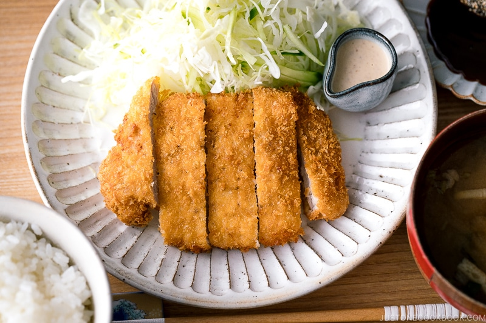

Tonkatsu Recipe

Tonkatsu consists of tender pork loin (or fillet) that has been breaded and deep-fried to crunchy perfection.
Ingredients:
- Pork loin or fillet
- Salt and pepper
- Flour
- Egg
- Panko
- Neutral flavored oil for deep frying
- Tonkatsu sauce
- (Optional)Sesame seeds
Steps:
- Dredge the pork in the flour and dust off any excess
- Dip the pork into the egg mixture and coat well
- Dredge the pork in the fresh panko and shake off any excess. Set aside for 5-10 minutes
- Deep fry it for a minute, a piece once a time. After a minute, flip the pork. Tip: Drop one piece of panko into the oil; if it sinks down to the middle of the oil and immediately pops back up to the surface, then the oil is ready.
- Take it off from the oil and let it rest on paper towel for 4 minutes
- Turn off the heat to scoop fried crumbs. Turn the heat on again
- Fry again, 30 seconds each side, and let it rest on paper towel for two minutes.